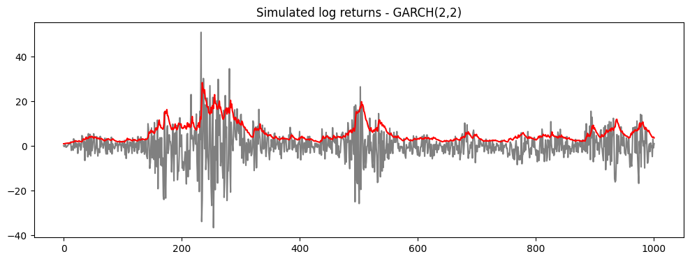
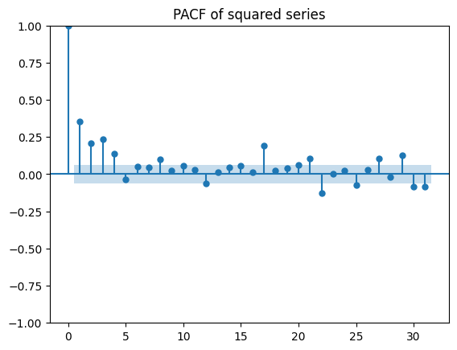
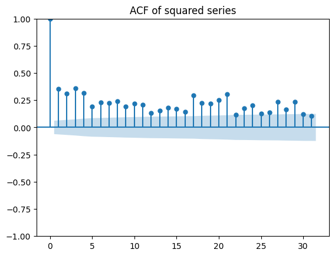
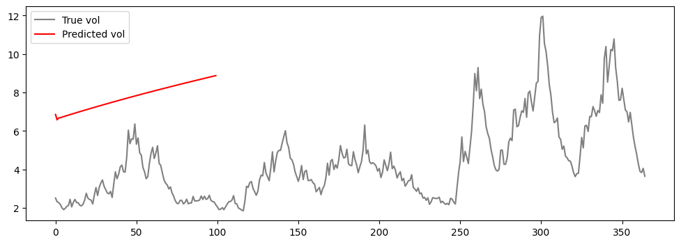
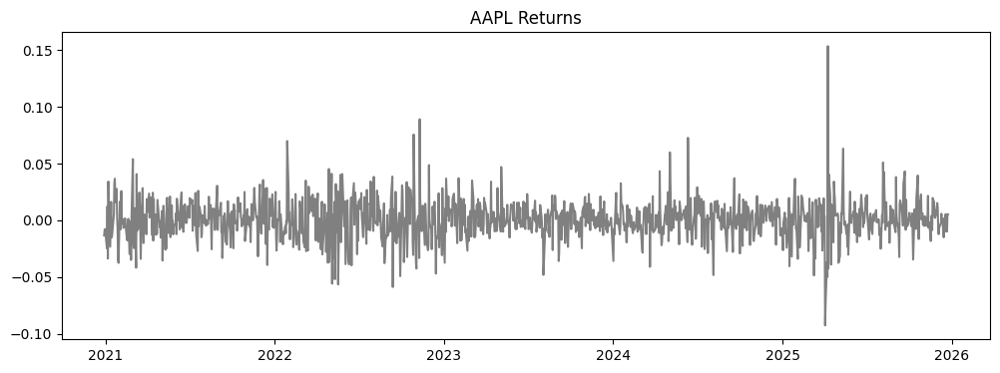
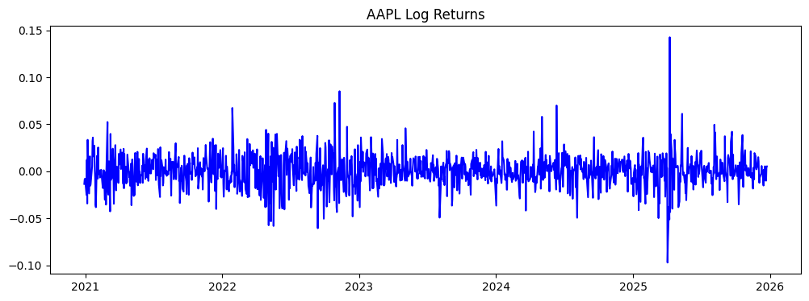
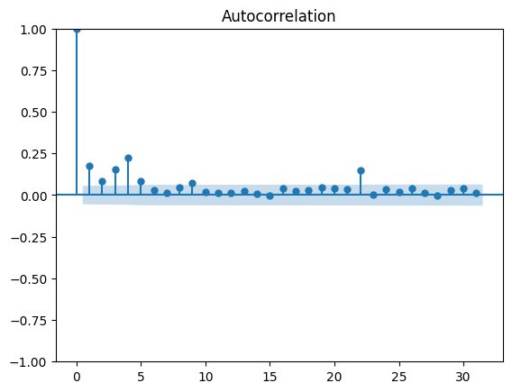
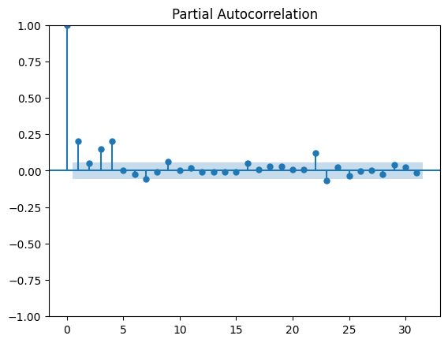
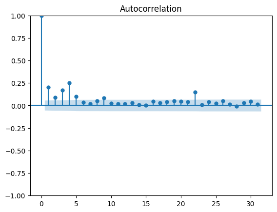
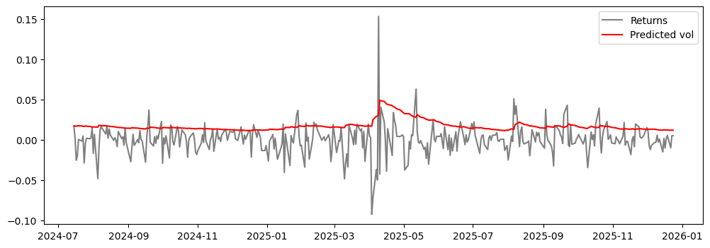

from random import gauss
import matplotlib.pyplot as plt
import numpy as np
import pandas as pd
from arch import arch_model
from statsmodels.graphics.tsaplots import plot_acf, plot_pacfGARCH(2,2): Expanded Notes and Data-Generating Process
Let \(P_t\) denote the asset price. The log-return is defined as \[ r_t = \log P_t - \log P_{t-1}. \]
Return (data-generating) equation
The log-return follows \[ r_t = \mu + \sigma_t z_t, \qquad z_t \sim \text{i.i.d. } (0,1), \] where \(\sigma_t^2\) is the conditional variance given information \(\mathcal{F}_{t-1}\).
Conditional variance dynamics (GARCH(2,2))
The conditional variance evolves according to \[ \sigma_t^2 = \omega + \alpha_1 (r_{t-1} - \mu)^2 + \alpha_2 (r_{t-2} - \mu)^2 + \beta_1 \sigma_{t-1}^2 + \beta_2 \sigma_{t-2}^2. \]
Fully expanded return equation
Substituting the variance equation into the return equation yields the explicit nonlinear dynamics \[ r_t = \mu + z_t \sqrt{ \omega + \alpha_1 (r_{t-1} - \mu)^2 + \alpha_2 (r_{t-2} - \mu)^2 + \beta_1 \sigma_{t-1}^2 + \beta_2 \sigma_{t-2}^2 }. \]
Thus, current returns depend on past returns only through their squared deviations from the mean.
Considering zero mean:
\[ r_t = z_t \sqrt{ \omega + \alpha_1 r_{t-1}^2 + \alpha_2 r_{t-2}^2 + \beta_1 \sigma_{t-1}^2 + \beta_2 \sigma_{t-2}^2 }. \]
Parameter restrictions
To ensure positivity of the conditional variance, \[ \omega > 0, \qquad \alpha_i \ge 0, \qquad \beta_j \ge 0. \]
For covariance stationarity, \[ \alpha_1 + \alpha_2 + \beta_1 + \beta_2 < 1. \]
Unconditional variance
If the stationarity condition holds, the unconditional variance exists and is given by \[ \mathbb{E}[\sigma_t^2] = \frac{\omega} {1 - (\alpha_1 + \alpha_2 + \beta_1 + \beta_2)}. \]
Key properties
Returns are conditionally heteroskedastic but serially uncorrelated: \[ \mathbb{E}[r_t \mid \mathcal{F}_{t-1}] = \mu. \]
Squared returns exhibit serial dependence (volatility clustering).
The model can be viewed as a nonlinear autoregression in variance, equivalent to an ARCH(\(\infty\)) process.
Practical remarks
- In practice, GARCH(1,1) often captures most volatility persistence.
- Heavy-tailed innovations (Student-\(t\)) are commonly used.
- GARCH models are primarily used for volatility forecasting rather than direct option pricing.
Model Simulation
n = 1000
omega = 0.5
alpha_1 = 0.1
alpha_2 = 0.2
beta_1 = 0.3
beta_2 = 0.4
test_size = int(n*0.1)
series = [gauss(0,1), gauss(0,1)]
vols = [1,1]
for _ in range(n):
vol = np.sqrt(omega + alpha_1 * series[-1]**2 + alpha_2 * series[-2]**2 + beta_1 * vols[-1]**2 + beta_2 * vols[-2]**2)
val = gauss(0,1) * vol
vols.append(vol)
series.append(val)plt.figure(figsize=(12,4))
plt.plot(series,color='grey')
plt.plot(vols,color='red')
plt.title("Simulated log returns - GARCH(2,2)")Text(0.5, 1.0, 'Simulated log returns - GARCH(2,2)')
PACF and ACF of Squared Model
plot_pacf(np.array(series)**2)
plt.title("PACF of squared series")
plt.show()
Note that squaring a series genereated by a GARCH(2,2) model yields one where values are directly dependant on vals shifted by h=1 and h=2.
plot_acf(np.array(series)**2)
plt.title("ACF of squared series")
plt.show()
The autocorrelation, however, also reflects the indirect effect of the lagged variances.
Variances are serially autocorrelated (\(\sigma_t^2 = \omega + \alpha_1 \varepsilon_{t-1}^2 + \alpha_2 \varepsilon_{t-2}^2 + \beta_1 \sigma_{t-1}^2 + \beta_2 \sigma_{t-2}^2\) ), resulting in slowly decaying ACF.
Fitted Garch Model
train, test = series[:-test_size], series[-test_size:]
model = arch_model(train, p=2, q=2)model_fit = model.fit()Iteration: 1, Func. Count: 8, Neg. LLF: 753431117.7051901
Iteration: 2, Func. Count: 17, Neg. LLF: 18450.91507561129
Iteration: 3, Func. Count: 26, Neg. LLF: 3152.6112581154075
Iteration: 4, Func. Count: 34, Neg. LLF: 2734.752786393626
Iteration: 5, Func. Count: 42, Neg. LLF: 2672.2249549015505
Iteration: 6, Func. Count: 50, Neg. LLF: 2650.6621664584354
Iteration: 7, Func. Count: 58, Neg. LLF: 2638.719214678481
Iteration: 8, Func. Count: 66, Neg. LLF: 2635.2922043738663
Iteration: 9, Func. Count: 73, Neg. LLF: 2635.0756794260697
Iteration: 10, Func. Count: 80, Neg. LLF: 2634.8350829654723
Iteration: 11, Func. Count: 87, Neg. LLF: 2634.6789114928215
Iteration: 12, Func. Count: 94, Neg. LLF: 2634.6571845445424
Iteration: 13, Func. Count: 101, Neg. LLF: 2634.652524483841
Iteration: 14, Func. Count: 108, Neg. LLF: 2634.6516705931317
Iteration: 15, Func. Count: 115, Neg. LLF: 2634.651582096965
Iteration: 16, Func. Count: 122, Neg. LLF: 2634.6515809395405
Iteration: 17, Func. Count: 128, Neg. LLF: 2634.6515803129532
Optimization terminated successfully (Exit mode 0)
Current function value: 2634.6515809395405
Iterations: 17
Function evaluations: 128
Gradient evaluations: 17model_fit.summary()| Dep. Variable: | y | R-squared: | 0.000 |
|---|---|---|---|
| Mean Model: | Constant Mean | Adj. R-squared: | 0.000 |
| Vol Model: | GARCH | Log-Likelihood: | -2634.65 |
| Distribution: | Normal | AIC: | 5281.30 |
| Method: | Maximum Likelihood | BIC: | 5310.13 |
| No. Observations: | 902 | ||
| Date: | Tue, Dec 23 2025 | Df Residuals: | 901 |
| Time: | 22:53:36 | Df Model: | 1 |
| coef | std err | t | P>|t| | 95.0% Conf. Int. | |
|---|---|---|---|---|---|
| mu | -0.0121 | 0.102 | -0.118 | 0.906 | [ -0.213, 0.188] |
| coef | std err | t | P>|t| | 95.0% Conf. Int. | |
|---|---|---|---|---|---|
| omega | 0.4406 | 0.221 | 1.993 | 4.623e-02 | [7.373e-03, 0.874] |
| alpha[1] | 0.1292 | 3.914e-02 | 3.301 | 9.621e-04 | [5.251e-02, 0.206] |
| alpha[2] | 0.1317 | 7.960e-02 | 1.654 | 9.812e-02 | [-2.435e-02, 0.288] |
| beta[1] | 0.6269 | 0.312 | 2.011 | 4.436e-02 | [1.580e-02, 1.238] |
| beta[2] | 0.1122 | 0.253 | 0.444 | 0.657 | [ -0.384, 0.608] |
Covariance estimator: robust
Notice beta_1 is not significant (P>|t| : H0: beta_2=0 not rejected) !
predictions = model_fit.forecast(horizon=test_size)plt.figure(figsize=(12,4))
true, = plt.plot(vols[-test_size:],color='grey')
preds, = plt.plot(np.sqrt(predictions.variance.values[-1,:]), color='red')
plt.legend(['True vol','Predicted vol'])
plt.show()
Stock Forecastign with GARCH Model
import yfinance as yfticker_symbol = "AAPL"
# Create a Ticker object
ticker = yf.Ticker(ticker_symbol)
# Fetch historical market data
historical_data = ticker.history(period="5y")
# Get returns
returns = historical_data.Close.pct_change().dropna()
log_returns = np.log(returns+1)plt.figure(figsize=(12,4))
plt.plot(returns,color='grey')
plt.title("AAPL Returns")
plt.show()
plt.figure(figsize=(12,4))
plt.plot(log_returns,color='blue')
plt.title("AAPL Log Returns")
plt.show()

plot_pacf(returns**2)
plot_acf(returns**2)
plt.show()
plot_pacf(log_returns**2)
plot_acf(log_returns**2)
plt.show()

Fit Returns - GARCH(1,1)
model = arch_model(100*returns, p=1, q=1)
model_fit = model.fit()Iteration: 1, Func. Count: 6, Neg. LLF: 156059559015.8227
Iteration: 2, Func. Count: 14, Neg. LLF: 4846.474998876214
Iteration: 3, Func. Count: 22, Neg. LLF: 3233.152075714213
Iteration: 4, Func. Count: 29, Neg. LLF: 2556.170228929119
Iteration: 5, Func. Count: 37, Neg. LLF: 2407.635431784043
Iteration: 6, Func. Count: 43, Neg. LLF: 2402.4773508353956
Iteration: 7, Func. Count: 48, Neg. LLF: 2402.473997552952
Iteration: 8, Func. Count: 53, Neg. LLF: 2402.4739102120466
Iteration: 9, Func. Count: 58, Neg. LLF: 2402.4739079759584
Iteration: 10, Func. Count: 62, Neg. LLF: 2402.4739079796523
Optimization terminated successfully (Exit mode 0)
Current function value: 2402.4739079759584
Iterations: 10
Function evaluations: 62
Gradient evaluations: 10model_fit.summary()| Dep. Variable: | Close | R-squared: | 0.000 |
|---|---|---|---|
| Mean Model: | Constant Mean | Adj. R-squared: | 0.000 |
| Vol Model: | GARCH | Log-Likelihood: | -2402.47 |
| Distribution: | Normal | AIC: | 4812.95 |
| Method: | Maximum Likelihood | BIC: | 4833.48 |
| No. Observations: | 1254 | ||
| Date: | Wed, Dec 24 2025 | Df Residuals: | 1253 |
| Time: | 13:55:43 | Df Model: | 1 |
| coef | std err | t | P>|t| | 95.0% Conf. Int. | |
|---|---|---|---|---|---|
| mu | 0.1232 | 4.655e-02 | 2.647 | 8.132e-03 | [3.196e-02, 0.214] |
| coef | std err | t | P>|t| | 95.0% Conf. Int. | |
|---|---|---|---|---|---|
| omega | 0.0931 | 4.716e-02 | 1.974 | 4.840e-02 | [6.527e-04, 0.186] |
| alpha[1] | 0.0676 | 2.100e-02 | 3.217 | 1.295e-03 | [2.640e-02, 0.109] |
| beta[1] | 0.9010 | 3.070e-02 | 29.349 | 2.432e-189 | [ 0.841, 0.961] |
Covariance estimator: robust
Fit Log Returns - GARCH(1,1)
model = arch_model(100*log_returns, p=1, q=1)
model_fit = model.fit()Iteration: 1, Func. Count: 6, Neg. LLF: 165281512402.9082
Iteration: 2, Func. Count: 14, Neg. LLF: 5944.128676881067
Iteration: 3, Func. Count: 23, Neg. LLF: 3069.7090415119787
Iteration: 4, Func. Count: 31, Neg. LLF: 2582.3995287282733
Iteration: 5, Func. Count: 39, Neg. LLF: 2399.485143759859
Iteration: 6, Func. Count: 44, Neg. LLF: 2399.4842489426505
Iteration: 7, Func. Count: 49, Neg. LLF: 2399.4841429671355
Iteration: 8, Func. Count: 54, Neg. LLF: 2399.48413754622
Iteration: 9, Func. Count: 59, Neg. LLF: 2399.48413693164
Optimization terminated successfully (Exit mode 0)
Current function value: 2399.48413693164
Iterations: 9
Function evaluations: 59
Gradient evaluations: 9model_fit.summary()| Dep. Variable: | Close | R-squared: | 0.000 |
|---|---|---|---|
| Mean Model: | Constant Mean | Adj. R-squared: | 0.000 |
| Vol Model: | GARCH | Log-Likelihood: | -2399.48 |
| Distribution: | Normal | AIC: | 4806.97 |
| Method: | Maximum Likelihood | BIC: | 4827.50 |
| No. Observations: | 1254 | ||
| Date: | Wed, Dec 24 2025 | Df Residuals: | 1253 |
| Time: | 13:56:30 | Df Model: | 1 |
| coef | std err | t | P>|t| | 95.0% Conf. Int. | |
|---|---|---|---|---|---|
| mu | 0.1080 | 4.581e-02 | 2.358 | 1.836e-02 | [1.825e-02, 0.198] |
| coef | std err | t | P>|t| | 95.0% Conf. Int. | |
|---|---|---|---|---|---|
| omega | 0.0887 | 4.365e-02 | 2.033 | 4.205e-02 | [3.190e-03, 0.174] |
| alpha[1] | 0.0650 | 1.825e-02 | 3.560 | 3.712e-04 | [2.920e-02, 0.101] |
| beta[1] | 0.9047 | 2.744e-02 | 32.969 | 2.296e-238 | [ 0.851, 0.958] |
Covariance estimator: robust
Retuers - GARCH(1,1) Validation
rolling_predictions = []
test_size = 365
for i in range (test_size):
train = returns[:-(test_size-i)]
model = arch_model(100*train, p=1, q=1)
model_fit = model.fit(disp='off')
pred = model_fit.forecast(horizon=1)
rolling_predictions.append(np.sqrt(pred.variance.values[-1,:][0])/100)rolling_predictions = pd.Series(rolling_predictions, index=returns.index[-365:])plt.figure(figsize=(12,4))
plt.plot(returns[-365:],color='grey')
plt.plot(rolling_predictions, color='red')
plt.legend(['Returns','Predicted vol'])
plt.show()